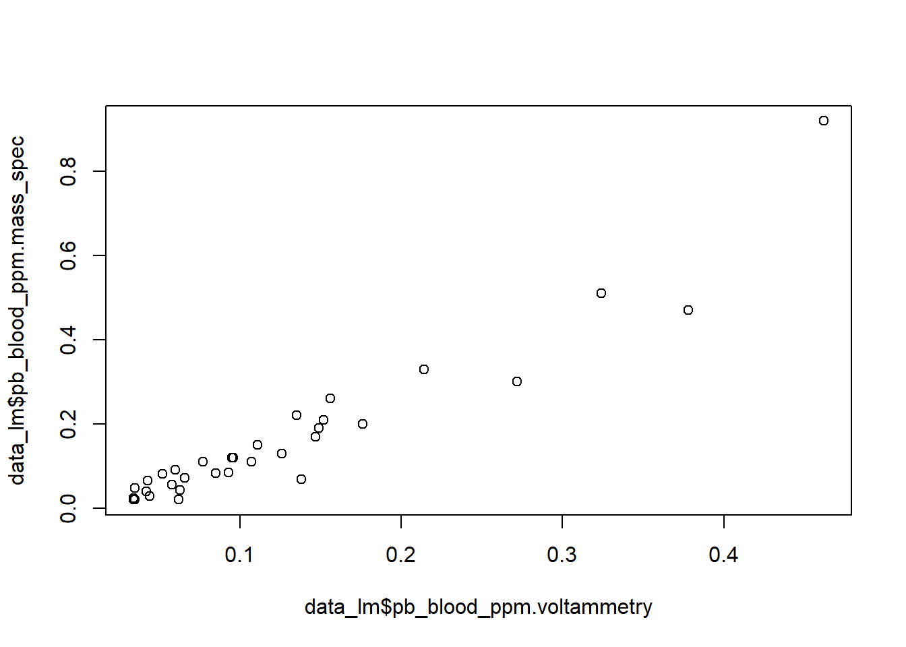
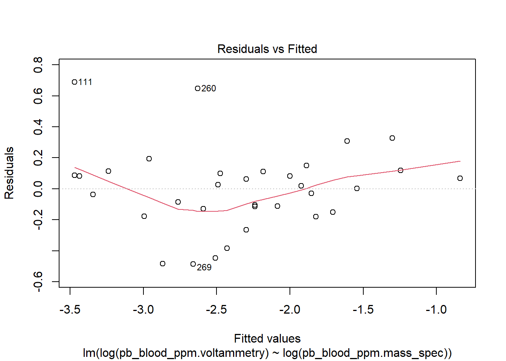
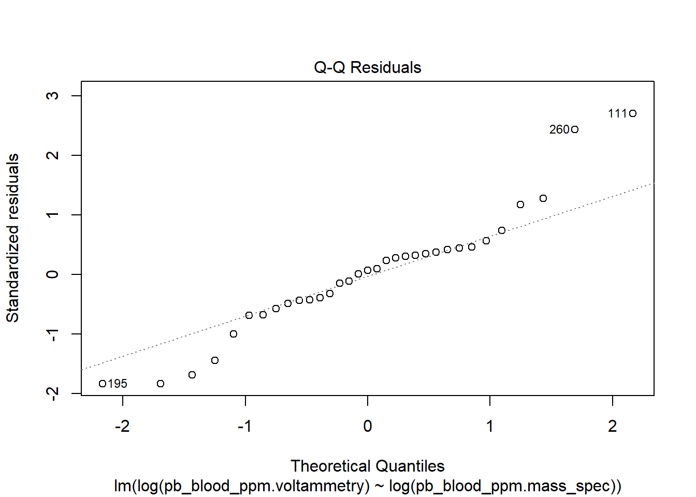
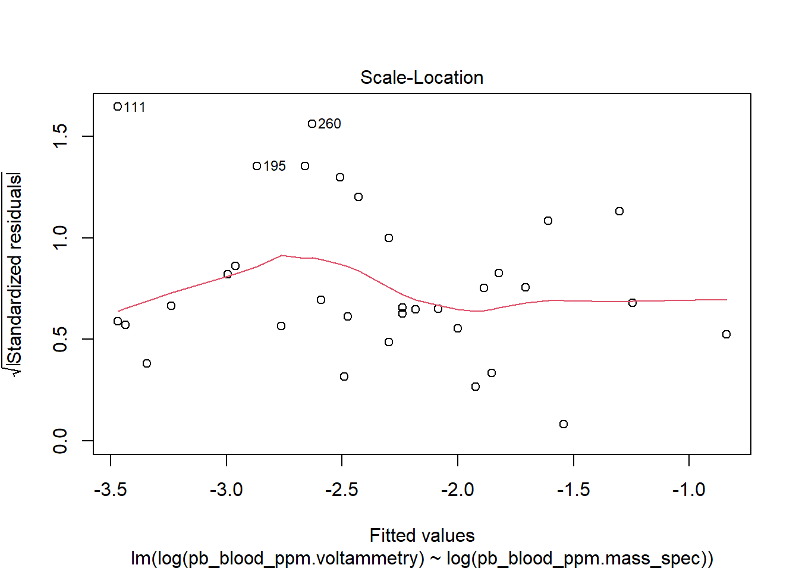
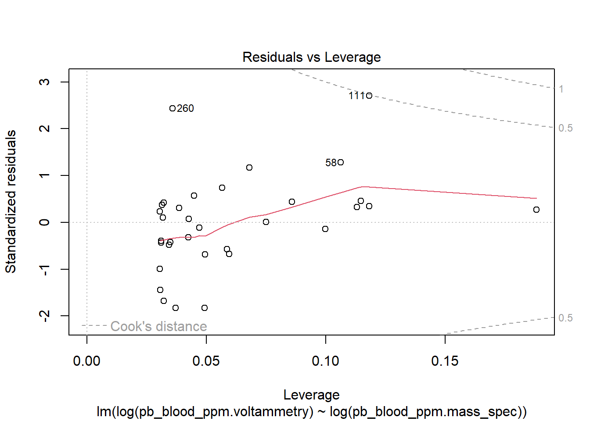

Last updated: 2025-12-09
Checks: 6 1
Knit directory: spei_lead/
This reproducible R Markdown analysis was created with workflowr (version 1.7.1). The Checks tab describes the reproducibility checks that were applied when the results were created. The Past versions tab lists the development history.
The R Markdown is untracked by Git. To know which version of the R
Markdown file created these results, you’ll want to first commit it to
the Git repo. If you’re still working on the analysis, you can ignore
this warning. When you’re finished, you can run
wflow_publish to commit the R Markdown file and build the
HTML.
Great job! The global environment was empty. Objects defined in the global environment can affect the analysis in your R Markdown file in unknown ways. For reproduciblity it’s best to always run the code in an empty environment.
The command set.seed(20230228) was run prior to running
the code in the R Markdown file. Setting a seed ensures that any results
that rely on randomness, e.g. subsampling or permutations, are
reproducible.
Great job! Recording the operating system, R version, and package versions is critical for reproducibility.
Nice! There were no cached chunks for this analysis, so you can be confident that you successfully produced the results during this run.
Great job! Using relative paths to the files within your workflowr project makes it easier to run your code on other machines.
Great! You are using Git for version control. Tracking code development and connecting the code version to the results is critical for reproducibility.
The results in this page were generated with repository version a41a727. See the Past versions tab to see a history of the changes made to the R Markdown and HTML files.
Note that you need to be careful to ensure that all relevant files for
the analysis have been committed to Git prior to generating the results
(you can use wflow_publish or
wflow_git_commit). workflowr only checks the R Markdown
file, but you know if there are other scripts or data files that it
depends on. Below is the status of the Git repository when the results
were generated:
Ignored files:
Ignored: .Rhistory
Ignored: .Rproj.user/
Ignored: admin/
Ignored: analysis/figure/
Ignored: documents/
Ignored: protocols/
Untracked files:
Untracked: analysis/map_eider_lead_fws_20251121.Rmd
Untracked: analysis/spei_pb_data_summary_20251202.Rmd
Untracked: code/est_exp_prob_create_plots_spei_lead_20231211.R
Untracked: data/7030169 data.csv
Untracked: data/README_spei_blood_lead_data.txt
Untracked: data/Rizzolo Lead VSEP22-045 E-report.xlsx
Untracked: data/eider_blood_samples_bands_utq_2022.csv
Untracked: data/eider_lead_fws.csv
Untracked: data/eider_lead_fws_2018-2022.csv
Untracked: data/eider_lead_fws_2018-2025.csv
Untracked: data/eider_lead_fws_2018-2025_20251203.csv
Untracked: data/eider_lead_fws_2023-2025_v2.csv
Untracked: data/eider_lead_fws_FOR_REP_SELECTION.csv
Untracked: data/leadcare2_validation/
Untracked: data/pb_merged_all_msResults_lc2Results_20251124.csv
Untracked: data/qtbl_pb_2023-2025.xlsx
Untracked: data/sample_id_spei_blood_lead_2018.csv
Untracked: data/samples_analyzed_2018/
Untracked: data/samples_analyzed_2022/
Untracked: data/samples_analyzed_2025/
Untracked: data/samples_leadCare2_results/
Untracked: data/sourced/
Untracked: data/spei_pb_all_2018-2025.csv
Untracked: data/spei_pb_ms_lc_20251124
Untracked: data/spei_pb_ms_lc_20251124.csv
Untracked: metadata/
Unstaged changes:
Modified: .gitignore
Modified: analysis/spei_pb_plot_validation_mass_spec_voltem.Rmd
Note that any generated files, e.g. HTML, png, CSS, etc., are not included in this status report because it is ok for generated content to have uncommitted changes.
There are no past versions. Publish this analysis with
wflow_publish() to start tracking its development.
Since 2018, the US Fish and Wildlife Service Endangered Species Recovery Program, out of the Northern Alaska Fish and Wildlife Field Office, has collected blood samples from Spectacled Eiders in Alaska to test for exposure to lead. Expsoure to spent lead shotgun pellets was demonstrated to have important negative local effects on spectacled eider survival in the 1990s (Flint et al. 2016 and references therein). We collected samples to estimate lead exposure rates 30 years after the use of lead pellets was prohibited in the Yukon-Kuskokwim Delta Region.
We collected blood samples opportunistically during projects that required capturing and handling spectacled eiders for other objectives. These projects included captures to deploy satellite transmitters at Kigigak Island (2018, 2023), the Tutakoke River (2018, 2022), the Kashunuk River (2022), Utqiagvik (2022), and Teshekpuk Lake (2022). We also collected samples from spectacled eiders captured for banding at Kigigak Island (2019, 2021-2025). All captures for satellite transmitter deployments occurred when eiders were arriving to the breeding areas, prior to mean nest initiation, except at the Kashunuk River and Kigigak Island in 2022 and 2023, respectively, when we captured eiders during the brood rearing period. We also collected blood samples from eiders captured during nest incubation for banding in 2019, 2021-2025.
We captured eiders at arrival using vertical mist nets setup in lakes with decoys. During incubation, we captured females on nests using bow nets, and during brood rearing, we captured ducklings and associated females by herding broods into mist nets setup vertically in lakes.
We collected blood samples from captured eiders using venipuncture of either the jugular or tibiotarsal veins. Jugular blood samples were 1-4 mL and collected using 21-22 gauge needles and 6 mL syringes; samples were transferred into 4 mL heparinized Vaccutainers. Tibiotarsal blood samples were < 0.5 mL and collected by pricking the vein with a 25 g needle and collecting blood in 1-3 capillary tubes which were transferred into a 1 mL heparinized MicroTainer.
All samples were stored frozen in the field and laboratory until analysis. Samples with volumes > 0.5 mL were analyzed using mass spectrometry. Samples with volumes < 0.5 mL were analyzed using voltammetry.
Samples collected in 2018, all > 0.5 mL, were analyzed at the Texas A & M Agrilife Research Veterinary Integrative Biosciences Laboratory (n = 66). Samples were freeze dried and homogenized and then digested and analyzed as dry samples. Results were converted to concentrations on the scale of wet mass using the mean moisture content for whole blood of 78.6% (CV = 2.51%). Lead concentration was determined using inductively coupled plasma-mass spectroscopy. Quality assurance-quality control procedures included procedural blanks (n = 4, mean blank equivalent concentration < 0.00825), duplicate samples (n = 3, mean relative difference 3.46%, range 0.38 to 7.48%), and standard reference material percent spike recoveries (mean 103.99%, range 99.16% to 107.56%). Analytical methods, results, and QAQC procedures were described in the summary report provided by TAMN (report_eider_2018_lead_7030169_results.pdf). The lower detection limit for methodology used in 2018 was < 0.00369 ppm and no upper limit.
Blood samples > 0.5 mL collected 2021-2025 were analyzed in two batches (samples collected 2021-2022 analyzed in 2022, n = X, 2023-2025 analyzed in 2025, n = X) at the Washington Animal Disease Diagnostic Laboratory using inductively coupled plasma mass spectrometry and nitric acid digestion. QAQC tests, including duplicates, blanks, and reference samples, were run on 10% of samples. QAQC results were all acceptable and were provided by WADDL in the file eider_lead_2022_quality_control_case_VSEP22-045E.xlsx. The lower detection limit for methodology used in 2022 and 2025 was < 0.02 ppm and no upper limit.
Blood samples < 0.5 mL collected 2023-2025 (n = X) were analyzed using a LeadCare II blood point-of-care blood lead testing system (Meridian Bioscience), which uses anodic stripping voltammetry to quantify lead concentration in whole blood. Technicians in the USFWS Fairbanks Fish and Wildlife Field Office Laboratory tested samples with LeadCare II following instructional materials and the LeadCare II User’s Guide. We also used the LeadCare II system to test a subset of samples analyzed using mass spectrometry to assess the agreement of results from the two methods using mass specrometry results as the standard for comparison. Detection limits for LeadCare II are > 0.033 ppm and < 0.65 ppm. Samples outside of this range are reported as either below or above the detection limits of the instrument.
To validate LeadCare II test results that were run on previously frozen samples treated with heparin, we reassigned mass spectrometry results at values below the LeadCare II detection limit to that limit, 0.033 ppm, and values above the LeadCare II test limit that test limit of 0.65 ppm. For LeadCare II results between the lower and upper detection limits, we calculated differences between mass spectometry results and LeadCare II results. We then fit a linear model to log-transformed lead concentration values treating the mass spectrometry results as the response variable and log-transformed LeadCare II results as the explanatory variable. We used model parameters to examine agreement between the results with good agreement indicated by a y-intercept estimate of zero and a slope estimate of 1.
We categorized lead exposure based on accepted thresholds: > 0.20 ppm associated with local, point-source exposure to lead; > 0.60 ppm associated with lead toxicosis.
# load mass spec lead data (from Texas A&M Univ, and Washington State)
ms <- read.csv("data/eider_lead_fws_2018-2025_20251203.csv")
# format data
ms$dt_sampled <- as.Date(ms$dt_sampled, format = "%Y-%m-%d")
# check data
#sum_ms <- summary(ms)
#sum_ms
# load Lead Care II results
#lc <- read.csv("data/spei_blood_lead_validation_results_20240306.csv")
#lc <- read.csv("data/samples_leadCare2_results/data_leadCare2_results_20251125.csv")
lc <- read.csv("data/samples_leadCare2_results/data_leadCare2_results_20251203.csv") #20241203 version includes covariates
lc$pb_blood_ppm <- lc$val_blood_lead_ug.dL*0.01 # convert lead from units of ug/dL to ppm
# remove replicates - samples measured more than once in the LeadCare II instrument, here is_replicate = 1 for the second sample result for a given sample. Removing replicate = 1 makes all LeadCare II results after this filter unique. Replicates can be used for validation of LeadCare II.
lc <- subset(lc, is_replicate != 1)
# format date
lc$dt_sampled <- as.Date(lc$dt_sampled, format = "%Y-%m-%d")
# specify relevant columns
keep <- c("id_metalBand", "pb_blood_ppm", "cat_analysis", "cat_detectLimit", "id_species", "dt_sampled", "cat_periodCapt", "id_studySite", "val_lat", "val_lon", "is_recap", "cat_sex", "cat_age", "val_bodyMass_g")
# subset to relevant columns to match ms data frame
lc <- lc[ , keep]
# check data
#sum_lc <-summary(lc)
#sum_lc
# merge ms into lc, keep only complete lc records
pb <- rbind.data.frame(ms, lc)
# check data
sum_pb <- summary(pb)
#table(pb$id_species) # all spei except 1 COEI and 2 KIEI
pb <- subset(pb, id_species == "SPEI")
# create year variable
pb$year <- format(pb$dt_sampled, "%Y")
# sort
pb <- pb[order(pb$id_metalBand, pb$dt_sampled), ]
# total number of blood samples
n_samples_all <- nrow(pb)
# total number of unique blood samples given band ID and date samples
n_samples_uniq <- nrow(unique(pb[c("id_metalBand", "dt_sampled")]))
dups <- duplicated(pb[, c("id_metalBand", "dt_sampled")])
reps <- pb[dups, ]
n_samples_reps <- nrow(reps)
n_mass_spec <- nrow(subset(pb, cat_analysis == "mass_spec"))
n_volt <- nrow(subset(pb, cat_analysis == "voltammetry"))
# change all ASY (males only) to AHY to simplify age categories to AHY and Local
pb$cat_age[pb$cat_age == "ASY"] <- "AHY"
#write.csv(pb, "data/spei_pb_all_2018-2025.csv")We analyzed 298 whole blood samples for lead concentration. We obtained results using mass spectrometry from 275 samples, and using voltammetry from 117 samples. Of those, 94 samples were analyzed using both methods.
Samples collected during arrival period were from both males and females. Incubation samples were from all females and samples from the brood rearing period were all female adults and both male and female ducklings. Sample sizes by study site, sampling period, and age class ranged from 2 blood samples from after hatch year females at Teshekpuk Lake to 162 samples from incubating females at Kigigak Island.
tbl_pb <- as.data.frame(table(pb$id_studySite, pb$cat_periodCapt, pb$cat_age))
colnames(tbl_pb) <- c("Site", "Period", "Age Class", "n")
# remove zeros
tbl_pb <- tbl_pb[tbl_pb$n != 0, ]
kable(tbl_pb,
caption = "Table 1. Sample sizes for whole samples collected from Spectacled Eiders 2018-2025 by capture site, sampling period, and age class.",
align = c("l", "l", "l"),
digits = 0,
row.names = FALSE)| Site | Period | Age Class | n |
|---|---|---|---|
| Kigigak | arrival | AHY | 42 |
| Teshekpuk | arrival | AHY | 2 |
| Tutakoke | arrival | AHY | 47 |
| Utqiagvik | arrival | AHY | 10 |
| Kashunuk | brood | AHY | 14 |
| Kigigak | brood | AHY | 36 |
| Kigigak | incubation | AHY | 162 |
| Utqiagvik | incubation | AHY | 3 |
| Kashunuk | brood | local | 15 |
| Kigigak | brood | local | 61 |
LeacCare II has a narrower detection range than mass spectometery with lower and upper detection limits of 0.033 ppm and 0.65 ppm, respectively. Mass spectrometry has a lower detection limit of 0.02 ppm (or less for samples analyzed in 2018) and no upper limit. LeadCare II results both below and adove the detection limit of the instrument showed high correspondence with mass specrometry results.
# create data frame with only records with duplicate combinations of metalBand and dt_sampled
valid_long <- pb[duplicated(pb[, c("id_metalBand", "dt_sampled")]) | duplicated(pb[, c("id_metalBand", "dt_sampled")], fromLast = TRUE), ]
# modify data frame from long to wide format with a column for mass spec pb values and a column for voltammetry pb values
pb_valid_wide <- reshape(valid_long,
direction = "wide",
idvar = c("id_metalBand", "dt_sampled"),
timevar = "cat_analysis",
v.names = "pb_blood_ppm"
)
# mass spec has lower detection limit than voltammetry.
# are all results from voltammetry that were < 0.033 have values from mass spec < 0.033?
ldl <- subset(pb_valid_wide, pb_blood_ppm.voltammetry == 0.033)
# number of volt results less than volt lower detection limit
n_volt_ldl <- nrow(ldl)
n_ms_match_volt_ldl <- nrow(subset(ldl, pb_blood_ppm.mass_spec < 0.034))
pct_match_ldl <- (n_ms_match_volt_ldl/n_volt_ldl)*100
pct_match_ldl <- sprintf("%.1f", pct_match_ldl)
# LeadCare II results above the upper detection limit of 0.65
udl <- subset(pb_valid_wide, pb_blood_ppm.voltammetry == 0.65)
n_volt_udl <- nrow(udl)
n_ms_match_volt_udl <- nrow(subset(udl, pb_blood_ppm.mass_spec > 0.65))
pct_match_udl <- (n_ms_match_volt_udl/n_volt_udl)*100
pct_match_udl <- sprintf("%.1f", pct_match_udl)Of the voltammetry results below the lower detection limit of the method (0.033 ppm), 83.6 % (46 of 55 samples) had mass spectrometry results < 0.033 ppm. The 9 samples with mass spectrometry measurements > the voltammetry lower detection limit ranged from 0.034 to 0.064 ppm (mean 0.045 ppm, 0.012 ppm mean deviation from the voltammetry lower detection limit). [ another way to say this would be: of the 55 samples that tested below the lower detection limit for LeadCare II, all but 9 had mass spectrometry values < 0.033 ppm).]
Of the voltammetry results above the upper detection limit of the method (0.65 ppm), 100.0 % (5 of 5 samples) had mass spectrometry results < 0.65 ppm. All 5 samples above the LeadCare II detection limit had mass spectrometry values also < 0.65 ppm.
# fit linear model mass spec pb ~ voltammetry pb using only LeadCare II results within detection limits
data_lm <- subset(pb_valid_wide, pb_blood_ppm.voltammetry < 0.65 & pb_blood_ppm.voltammetry > 0.033)
n_data_lm <- nrow(data_lm)
m1 <- lm(data = data_lm, log(pb_blood_ppm.voltammetry) ~ log(pb_blood_ppm.mass_spec))
sum_m1 <- summary(m1)
sum_m1
Call:
lm(formula = log(pb_blood_ppm.voltammetry) ~ log(pb_blood_ppm.mass_spec),
data = data_lm)
Residuals:
Min 1Q Median 3Q Max
-0.48691 -0.12872 0.01901 0.11202 0.68867
Coefficients:
Estimate Std. Error t value Pr(>|t|)
(Intercept) -0.78201 0.12134 -6.445 3.48e-07 ***
log(pb_blood_ppm.mass_spec) 0.68693 0.04912 13.984 6.22e-15 ***
---
Signif. codes: 0 '***' 0.001 '**' 0.01 '*' 0.05 '.' 0.1 ' ' 1
Residual standard error: 0.2711 on 31 degrees of freedom
Multiple R-squared: 0.8632, Adjusted R-squared: 0.8588
F-statistic: 195.6 on 1 and 31 DF, p-value: 6.218e-15confint_m1 <- confint(m1)
confint(m1) 2.5 % 97.5 %
(Intercept) -1.0294872 -0.5345325
log(pb_blood_ppm.mass_spec) 0.5867432 0.7871158plot(data_lm$pb_blood_ppm.voltammetry, data_lm$pb_blood_ppm.mass_spec)
Log-log linear model results indicate LeadCare II results were biased low compared to mass spectrometry results. Given a 1% increase in mass spectrometry lead concentration, Leadcare II lead concentration increased by 0.69% (95% confidence interval 0.59%, 0.79%)
The log-log linear model met linear model assumptions.
plot(m1)



sessionInfo()R version 4.5.1 (2025-06-13 ucrt)
Platform: x86_64-w64-mingw32/x64
Running under: Windows 11 x64 (build 22631)
Matrix products: default
LAPACK version 3.12.1
locale:
[1] LC_COLLATE=English_United States.utf8
[2] LC_CTYPE=English_United States.utf8
[3] LC_MONETARY=English_United States.utf8
[4] LC_NUMERIC=C
[5] LC_TIME=English_United States.utf8
time zone: America/Anchorage
tzcode source: internal
attached base packages:
[1] stats graphics grDevices utils datasets methods base
other attached packages:
[1] knitr_1.50 plotly_4.11.0 ggplot2_3.5.2
loaded via a namespace (and not attached):
[1] gtable_0.3.6 jsonlite_2.0.0 dplyr_1.1.4 compiler_4.5.1
[5] promises_1.3.3 tidyselect_1.2.1 Rcpp_1.1.0 stringr_1.5.1
[9] git2r_0.36.2 tidyr_1.3.1 later_1.4.2 jquerylib_0.1.4
[13] scales_1.4.0 yaml_2.3.10 fastmap_1.2.0 R6_2.6.1
[17] generics_0.1.4 workflowr_1.7.1 htmlwidgets_1.6.4 tibble_3.3.0
[21] rprojroot_2.1.0 bslib_0.9.0 pillar_1.11.0 RColorBrewer_1.1-3
[25] rlang_1.1.6 cachem_1.1.0 stringi_1.8.7 httpuv_1.6.16
[29] xfun_0.52 fs_1.6.6 sass_0.4.10 lazyeval_0.2.2
[33] viridisLite_0.4.2 cli_3.6.5 withr_3.0.2 magrittr_2.0.3
[37] digest_0.6.37 grid_4.5.1 rstudioapi_0.17.1 lifecycle_1.0.4
[41] vctrs_0.6.5 data.table_1.17.8 evaluate_1.0.4 glue_1.8.0
[45] farver_2.1.2 purrr_1.1.0 httr_1.4.7 rmarkdown_2.29
[49] tools_4.5.1 pkgconfig_2.0.3 htmltools_0.5.8.1